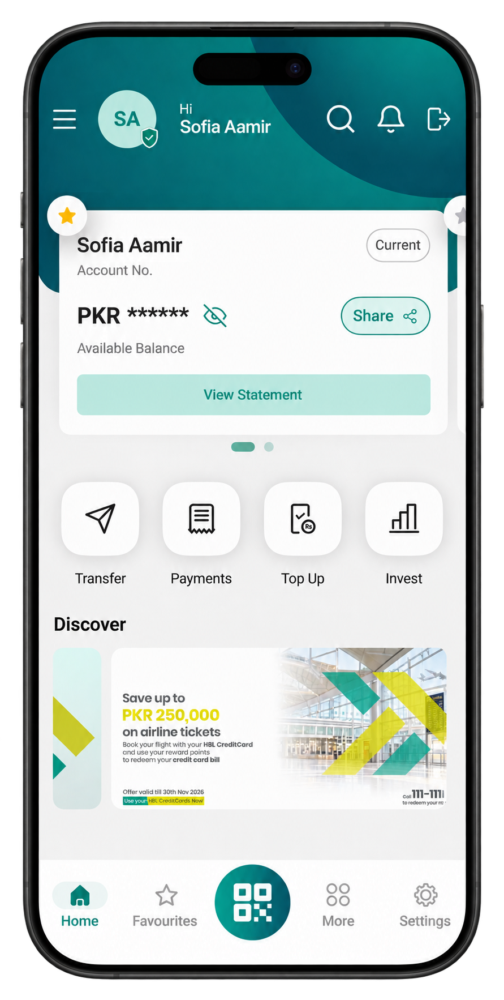
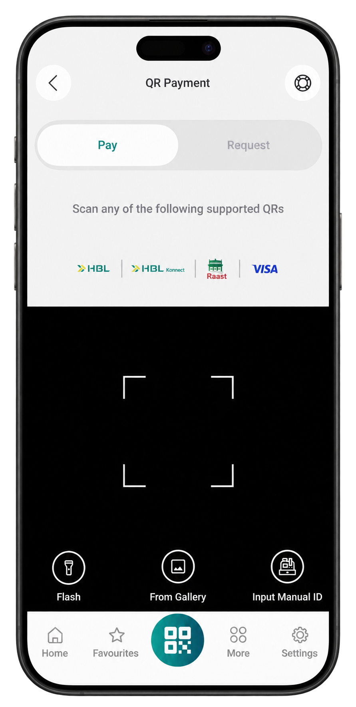
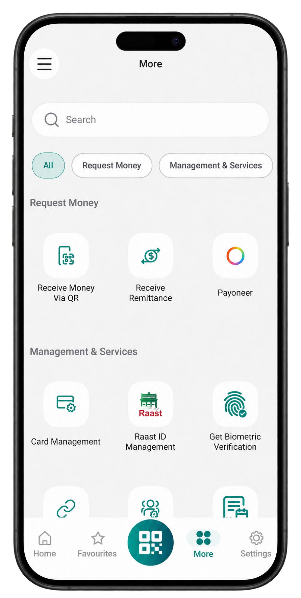

Mobile banking · Product design
More banking services, without more friction.
This mobile banking application was designed for a financial institution. The goal was to make everyday navigation easier and introduce more features without adding unnecessary steps, visual noise or cognitive load.

Project overview
A clearer path through a growing banking ecosystem.
The experience brings high-frequency actions closer to the home screen, groups secondary services into a searchable directory and keeps important account information easy to scan. A persistent navigation system connects home, favourites, QR payments, services and settings so customers can move between core tasks with less effort.
- Challenge
- Expand the product without making the experience feel heavier.
- Design focus
- Navigation, information architecture, discoverability and mobile interaction.
- Outcome
- A scalable structure that supports everyday banking and a broader set of services.
Selected screens
Core actions remain visible while deeper services stay organized.




Back to selected work
View all projects